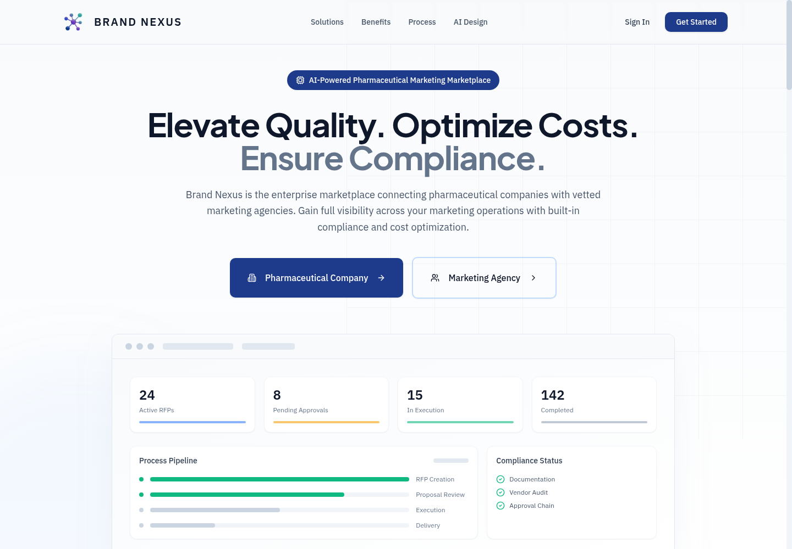

Clarify the user job
Before polishing UI, I make the core user problem explicit: who the screen is for, what decision it supports, and what the next action should be.
Product-minded frontend developer
I work across frontend implementation, UX structure, and AI-assisted product flows. The goal is simple: make the product understandable, usable, responsive, and credible enough to put in front of real users.

Selected work
Method
Before polishing UI, I make the core user problem explicit: who the screen is for, what decision it supports, and what the next action should be.
Good interfaces reduce hesitation. I use clear hierarchy, focused copy, responsive layouts, and visible affordances so users understand the product quickly.
A shipped project is stronger than a perfect mockup. I document what is live, what I contributed, and what should be improved in the next pass.
Positioning
I am strongest when the brief is not fully solved yet: turning rough ideas, user stories, and business goals into screens that people can understand and use.
This portfolio is intentionally built around live links, role clarity, and next-step thinking because hiring teams need evidence, not only polished screenshots.
Contact